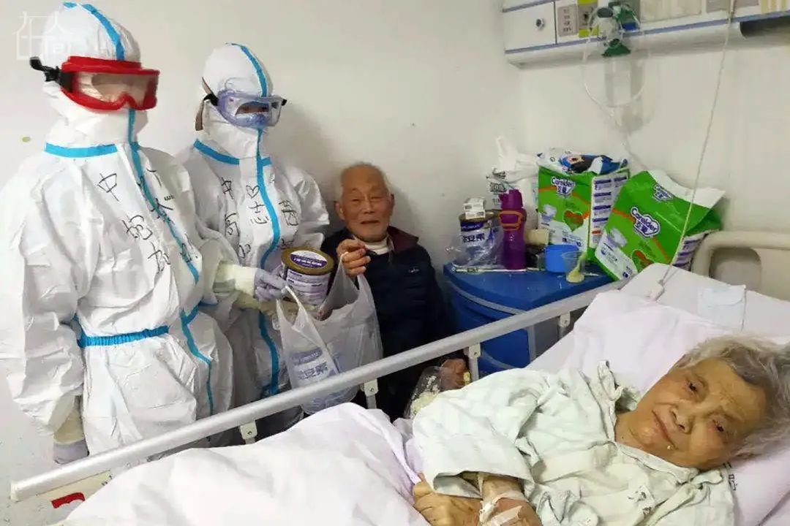
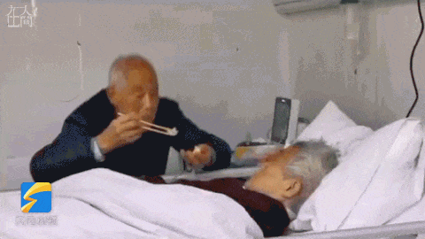
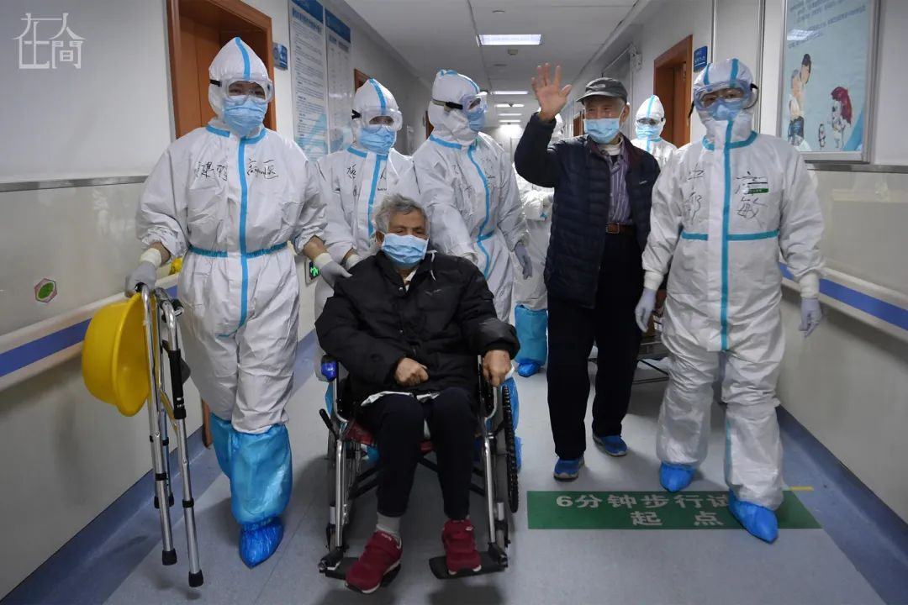

如果可以，我想替爷爷送玫瑰给奶奶
原文链接 备份链接 2月10日凌晨，爷爷头七那天，我在隔离酒店给他点了三根烟，磕了三个头，求他在天之灵保护他深爱的奶奶。 文 | 吴美芬 大黄，是武汉当地一支乐队的乐手，今年26岁。爸爸妈妈因病走得早，他自小在爷爷奶奶身边长大。1月底，爷 …


凤凰新闻客户端 凤凰网在人间工作室出品
打开凤凰新闻客户端，搜索「在人间」并关注
在武汉汉口医院呼吸七病区，冯保会拎着吊瓶颤巍巍到另一个病房给妻子李绍华喂饭。他把花甲肉一颗颗拨出来，放在纸杯里，再慢慢给妻子喂，像照顾小孩一样。他用武汉话哄着眼前的爱人，希望她再多吃一点。
同病房的病友把这个举动拍成视频发到网上，耄耋之年的爱情一下子感动了很多人。
冯保会88岁，李绍华83岁。他们属于疫情期间最易受到冲击的老年群体，同时也是武汉无数家庭交叉感染案例的亲历者。
幸运的是，两人在鬼门关转了一圈，都好好回到了人间。这其中有他们相濡以沫的爱情力量，也得益于家人和医护人员的悉心照顾。

冯家住在武汉江岸区。冯保会和李绍华住在一起，李绍华患有阿尔茨海默症，生活不能自理。他们有五个子女，其中四儿子叫冯世满，57岁。他们孙子冯云（化名）是冯世满的儿子，已成家。
冯世满和自己的儿孙住在附近三公里左右的另一个小区。由于父母年纪都很大，冯世满每天都要去帮两位老人准备好一天的食物。
他们常常在一起，也在一张桌子上吃饭。母亲李绍华虽然患有阿尔茨海默症，但是认得儿子，也喜欢跟儿子说话。
“她说的是她自己的语言，我也听不懂，她就是总想跟我拉着说话。”冯世满说。
1月14日，冯云带着母亲、妻子和孩子一起开车去东莞过年，冯世满一个人留在武汉照顾父母。
每天早上，冯世满带着母亲一起去菜市场买菜，再到小区里转一转，走一走，最后上楼做饭。彼时，他完全没有注意到一种病毒正在蔓延着。
1月17日，冯世满感到身体不舒服，体温38.4度，在社区医院连续打了三天针，效果并不见好。
与此同时，远在东莞过年的冯云在网上看到新冠病毒出现了人传人的迹象。19日，他给父亲冯世满打电话，让他少出门，出门也要戴口罩。结果父亲说自己已经发烧几天了。
1月20日到22日，冯世满在冯云的催促下，先后去了武汉汉口中心医院后湖院区、161医院和汉口医院，最终确诊住进汉口医院。
意识到父亲已经被感染，需要人照顾的冯云，经过一夜长途跋涉，开车带母亲从东莞回到武汉，到达汉口医院。
幸运的是，1月27日，冯世满治愈出院在家隔离。冯家进行了严密的防护，希望能够杜绝家庭聚集传染。

冯云此前就想过父亲可能会传染给爷爷奶奶。回武汉后他特意去爷爷奶奶家探望，没发现异样。
1月28日晚上9点多，爷爷突然打来电话，说奶奶坐在地上几个小时都不起来。
冯云过去，看到奶奶躺在地上，瑟瑟发抖。冯云想着，要给他们量体温，一测，奶奶39度，爷爷38度。
冯云决定马上送二老去医院。“爷爷那时都不知道自己很严重，他也不知道新冠病毒，不知道外界发生了什么。”冯云说。
当晚10点，冯云带着爷爷奶奶来到汉口医院，当时医院有两三百人，重症大概30人左右。
医院分为抢救室和普通门诊，抢救室的医生只负责抢救室和抢救室外围的重症患者，奶奶意识全无，属于重症。冯云把奶奶推到抢救室，医生量了血氧，不到70，就对冯云说，你要做好心理准备，奶奶估计过不了今天。
“我就赶紧跟医生说，奶奶肯定是重症，你现在赶紧给她吸氧，赶紧给她塞栓子降温。我强烈要求医生来打针，我说虽然你跟我说奶奶过不了今晚，但是我既然来了，你就要帮我来救。”冯云说。
爷爷冯保会也做了CT检查和血液检测，基本可以证明是新冠感染者。但因为当时汉口医院没办法做核酸，无法确诊，只能进行基础治疗。
过去几天照顾父亲在医院奔走，冯云已经知道，治疗新冠最好的物理方法就是要不断吸收高浓度的氧。现在住不了院，他也不能带他们回家，回家没有氧气。他拿了两条医院里的长条椅子，一个给奶奶，一个给爷爷，接着去家里拿床单被子，就让爷爷奶奶睡在医院。两人一人一个氧气瓶。
医院里其他病人也是如此。有的人从家里搬去躺椅，急诊室里大概有10个人，急诊室外面有20多个人。他们都没有确诊，医院不收，靠自费开药打针。
两位老人就这样在医院度过了8、9天。由于奶奶要换尿布，没有办法，冯云叫了姑妈来医院照顾奶奶。他每天继续去给爷爷奶奶送三餐，由爷爷负责喂奶奶。
走廊里每天都有人离开，冯云每天都能看到一二十人死亡。人们都很恐惧，有思维的人看到身边的人走了，恐惧又会增加。“一旦引发并发症都没办法救，因为当时医院只有关于肺部的治疗方法。”冯云说。
冯云安慰爷爷奶奶，说爸爸已经出院了，只要加强营养，不断吸氧，会熬过去的。冯云认为，由于奶奶患有阿尔茨海默症，爷爷耳朵聋，都不知道自己到底得了什么病，也不会问，心理压力反而比较小。
“那几天有机会做核酸检测，就给爷爷奶奶排进去了。2月4日结果就出来了，奶奶是双阳。”冯云回忆。2月4日上午9点钟，护士长把奶奶推到广州医疗队负责的隔离区去了，奶奶终于从急诊室住到了重症监护室。
奶奶李绍华住院之后，爷爷冯保会吵着要回家，他觉得老伴都不在这里了，他一个人也不想留在医院。但是冯云坚持让爷爷继续待在医院，等待住院。2月5日爷爷也被收治入院。
奶奶住院后，冯云也去做了CT检查。“当时检查的时候都吓死了，后来医生告诉我，我是正常的。”2月5日，把爷爷送入病房后，冯云开始进行自我隔离。

李绍华被送到广东援鄂医疗队病房时，基本属于昏迷状态。一侧肺基本上都白了，另外一侧肺也白了一部分，血液指标不好，贫血、营养不良。

■ 李奶奶在病房。
“她都昏迷了，你根本喂不了东西。” 郅敏说。
郅敏是中山大学附属第六医院消化内科主任医师，她所在的援鄂第二批医疗队有39个医生和98个护士，共137人被分到汉口医院。
郅敏回忆，当时李奶奶属于该病区照顾老人的典型案例。李奶奶所在的呼吸七病区累计收治的150名患者中，超过60岁的就有84人。
大量的高龄病人跟李绍华一样，吃不下饭。每次吃几口就不想吃了，盒饭凉了之后再热，来回热了三四次后饭都硬了，更不想吃了。当条件有限，食物也相对单调。
郅敏觉得，不能让病人继续再这样重下去了。所有人都是第一次遇到新冠病毒，没有特效药，“我们当时就想，如果患者的营养好一点，康复的机会就大一点。”
“我们一开始让家属买白蛋白，但是很多病人全家都病了，或者隔离了，根本就没有办法买。当时我们就在想，到底能干点什么，先解决老年人营养不良的问题。”

■ 郅敏医生看望两位老人（受访者供图）
广州医疗队一行出发前，考虑到上了前线，队里成员需要一边承受高强度的工作，一边可能没有充足的时间摄入足够的食物，保证不了营养，所以医院给每个医护人员发了一罐肠内营养粉剂。后来，队里又发了雅培全安素全营养配方粉（后简称“营养粉”）。
郅敏当时就提议，把营养粉拿给李绍华。“我们给奶奶持续每天补充，这样从临床上就可以解决奶奶营养不良的问题，现在没有特效药，而营养好不好会直接影响到疾病最后临床结局这么一个重要的结果。”
“我们当时说那我们都不要喝了，把这个省下来都拿去给病人吧”，郅敏说。“一罐营养粉是1800卡，大概一天一个人正常的热量，一杯营养粉是250大卡，到300卡，一天喝几杯，哪怕不吃饭，一个人她当天的热量和营养就足够了。”
2月8日，护理小组征求大家的意见，得到同意，就开始小范围实施。护士每4小时冲一杯，监督病人喝下去。很快，本来是躺着的病人，因为营养好了，体力得到一定的恢复，慢慢就可以坐起来了。
营养粉的消耗很大。郅敏联系雅培中国医学营养品部工作人员，问能不能再捐一些给医院，病人急需要用。这家公司二话不说，马上又捐给医院50箱营养粉，特意直送到医院。

■ 队员们给李奶奶送去自己的雅培全安素全营养配方粉（受访者供图）
奶奶李绍华在重症监护室时，医生开始让她喝营养粉。除了积极治疗新冠肺炎外，医护人员还按照五阶梯方法对李奶奶制定了个性化的营养摄入方案。郅敏说：“最早，我们给李奶奶进行部分肠内营养（经口途径营养粉摄入）和部分口服食物的方法，但是发现不行，后来就以肠内营养（经口途径营养粉摄入）为主，加部分的口服食物。”
虽然爷爷冯保会的症状比奶奶轻，住在普通病房，但因为年纪大，也被要求喝营养粉补充营养。

两个人住在同一个病区不同病房。爷爷也要打针，但每天早中晚，爷爷都不在自己的床位，而是出现在奶奶的床位旁。
最初谁也不知道他们是夫妻。
有一次下午一点，护士孙小玉看到手上还在输注补液的冯爷爷起床，一手持补液，一手握着一个纸杯，纸杯里放着一双筷子，颤颤巍巍地朝着护士站的另一边走去热饭。然后打开饭盒把自己餐盒内的花甲拨开，取出花甲肉连同炒鸡蛋一起放入纸杯里，又走到护士站的另一边病房，不见踪影。
还有一次，夜里凌晨，孙小玉巡视病房，看到冯爷爷端着半盆热水从护士站另一侧走过来，并且走错了房间，去了另一个病房。她以为老人家走错了路。又一次零点时分，巡视病房时，她发现冯爷爷又穿上了厚厚的外套，并且半卧姿势。她之后才知道，他是起床看妻子睡得好不好。
冯爷爷后来告诉医护人员：“我在对面房间住，（夜里）我总是要起来三遍、四遍，看看她的被子盖好了没有……”

■冯保会正在给妻子喂饭（视频来源：齐鲁网）
护士给李绍华喂饭时，她不吃，爷爷来喂，她才开口吃一点。“她对爷爷很依赖，爷爷说乖，吃饭，她就张口。爷爷会说，这个肉你最喜欢了……吃点面，吃个蛋蛋，有营养。”
冯爷爷每天给奶奶喂完饭，才吃自己。二老胃口不好，一盒饭往往两个人吃。为此医生为此每天额外再让他们喝四五杯营养粉。
一个礼拜后，李绍华奶奶从重症监护室转到普通隔离病房。再后来，郅敏去查房，冯保会报喜一般说，她今天可以自己坐起来，吃了一个馒头。
同病房的病友拍摄了冯爷爷照顾李奶奶的视频传到网上，两位老人迅速被很多网友关注。温暖的感情给病房的其他病人也带来希望。

■ 出院前，冯爷爷和李奶奶在病房。
冯爷爷跟医护人员说，她年轻的时候很能干的，她比我还能说，比我还识大体，我们家里里外外都是她，她为我们家做了不少贡献，不能她现在病了我就不管她，人要讲良心。
李绍华年轻时做事风风火火。儿子冯世满说，她很能干，一个人养5个小孩，自己的工作也是妈妈帮忙找到的。她后来在武汉市第二帆布厂上班，50岁退休后，就在外面卖东西，早上卖兰花、栀子花，下午还要进点菜卖。
冯云眼中，爷爷就是好男人的形象，而奶奶则是女强人。“奶奶年轻时一个人照顾家庭，爷爷在造纸厂当顾问。家里的事情基本上都是奶奶说了算，爷爷只负责工作，两人从来不吵架。他们俩感情非常好，总是轻言细语的，我父亲很会讲故事，讲到我妈笑的不得了”，冯世满说。
后来，李绍华的朋友发现她总是丢三落四，钥匙放在哪里也不知道，总是在找东西。家人带她去医院检查，医生说她患老年痴呆了。
早几年，李绍华经常走丢，有一次出去了48个小时，家人报警，到处找，被人送到派出所才找到。当时冯爷爷急的不得了，家人报警之后，他第二天又跑到派出所去，说我老婆找不见了。
“现在就是搞反了，我爸照顾我妈了，以前都是妈妈照顾爸爸”，冯世满说。

■ 2月26日，出院当天，李奶奶在病区走廊试着走了一段路。
李绍华虽然患有阿尔茨海默症7年，但入院之前是可以走路的。医护人员又尝试让她下床走路。“护士拉着她，说奶奶你坐起来，奶奶不理。她就把两个手臂张开说，奶奶你到我怀里来，奶奶坐起来就扑到她怀里，就跟小孩一样”，郅敏说。

2月26日，88岁的冯爷爷，83岁的李奶奶，一起出院了。
快走出医院的时候，冯爷爷对着奶奶喊：“李绍华，你没有想到你有今天，你居然可以出院。”所有人都笑了。
3月12日，他们去医院复查，进行核酸检测，检测为阴性。3月16日，进行了第二次核酸检测，结果仍为阴性。
现在，冯世满到父母家跟他们一起隔离，帮父母做饭，同时照顾他们。回家时，医院送了很多全营养配方粉，冯世满说现在二老每天要喝四次，他和父亲还坚持每天一起扶母亲锻炼行走。下午，李绍华总要上床睡会儿，冯保会也会陪着妻子一起睡。

他们终于熬过了这个冬天。
（冯云为化名）
更多疫情故事，请点击左下角「阅读原文」。


新型肺炎疫情牵动人心，
《在人间》现面向全国网友征稿：
（一） 疫区影像日记
如果你身处疫区
请你用照片（视频）和文字记录
你所听闻和见到的一切
照片不少于3张
文字不少于300字
投稿方式：微信联系人间君（zairenjianliving）
（二）抗击疫情真实故事
无论你是一线医护人员、志愿者、
确诊或疑似患者及家属、已治愈出院人士等等，
如果希望讲述疫情相关经历，
请微信联系人间君（zairenjianliving）

原文链接 备份链接 2月10日凌晨，爷爷头七那天，我在隔离酒店给他点了三根烟，磕了三个头，求他在天之灵保护他深爱的奶奶。 文 | 吴美芬 大黄，是武汉当地一支乐队的乐手，今年26岁。爸爸妈妈因病走得早，他自小在爷爷奶奶身边长大。1月底，爷 …
原文链接 备份链接 凤凰新闻客户端 凤凰网在人间工作室出品 对于刚刚年满十八岁的少年小雨来说，2020年1月25日，大年初一晚上，是他生命中迄今最漫长的一夜。 武汉下着雨。第一人民医院发热门诊急救室外的走廊上，小雨和母亲相偎在没有温度的椅 …
原文链接 备份链接 “ - 成 长 故 事 - 尽管爷爷在越南的丛林里经历过枪林弹雨，浑身是胆。但我不在家的日子里，他醒来后一个人面对空荡荡的房间，也是会孤单的吧。他要强了一辈子，凡事从来不服输，智能手机也许只是他不愿承认自己孤独的一个理 …
原文链接 备份链接 【财新网】（记者 萧辉）2月28日，独自在武大中南医院新冠隔离病房住了半个月的李珊珊出院了，被转往隔离酒店医学观察。这位疑似新冠病人在微信朋友圈写下：离回家又近了一步。 2月14日剖腹产，李珊珊来不及看一眼，女儿就被送 …
原文链接 备份链接 这是驰援武汉的复旦大学附属中山医院医疗队领队朱畴文的谈话录音，讲述了他和他的团队从抵达武汉，进驻医院到参与治疗过程的经历，在谈到武汉和武汉人时，他几度声音哽咽。关于防护物资、关于病人收治、关于疫苗、关于心理压力、关于 …